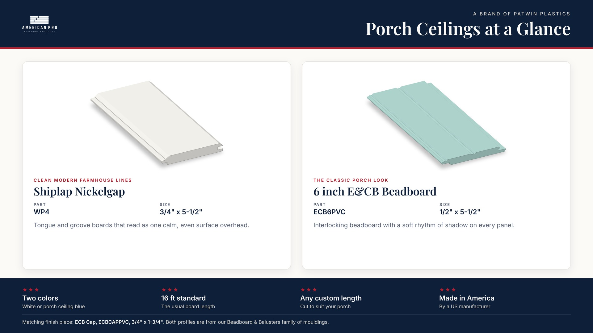

Think about the last time you sat on your porch at the end of a long day. You probably weren't looking at the floor. You were leaning back in the swing or the rocking chair, looking up and out. The ceiling over your porch is the part you see every evening, and it quietly sets the mood for everything else.
A clean, finished ceiling tells every guest the same thing: welcome, come sit a while. Here's how to pick one you'll be proud of every time you turn on the porch light.
Two Looks, Two Different Feelings
American Pro makes two porch ceiling profiles, both from our Beadboard and Balusters family of mouldings.
Shiplap Nickelgap (Part WP4). If you love a calm, modern farmhouse feel, this is your board. It measures 3/4 inch by 5 1/2 inches, with a crisp shadow line between every board. Each board has a tongue on one side and a groove on the other, so the ceiling goes up board by board and reads as one smooth, even surface overhead.
6" E&CB Beadboard (Part ECB6PVC). This is the classic porch ceiling that has welcomed people onto front porches for generations. It measures 1/2 inch by 5 1/2 inches, and the panels interlock. The bead detail adds a soft rhythm of shadow that feels right at home on a farmhouse, a cottage, or a grand old Victorian.
To finish the edges neatly, the matching ECB Cap (Part ECBCAPPVC, 3/4 inch by 1 3/4 inches) gives your beadboard ceiling a clean, finished look.

White or a Little Bit of Sky
Both ceiling profiles come in two colors.
White keeps the porch bright, clean, and simple. It bounces light around and makes a shaded porch feel open.
Porch ceiling blue is a soft, pale aqua that many people call haint blue. It brings a cool, restful feeling overhead, like a patch of summer sky that stays put. If you've ever sat under a blue porch ceiling on a hot afternoon, you know how relaxing it feels.
Colors on a screen are only a guide, so we always suggest seeing a real sample in your own light before you decide. Morning sun and evening shade can make the same color feel different.
Lengths That Fit Your Porch
Our standard length is 16 feet, and any custom length is available. That matters more than you might think. When the boards are made to suit your porch, the ceiling runs clean with fewer joints to plan around, and the finished job looks the way you pictured it.
Tell us the size of your porch and we'll help you plan the order.
Pair It With the Rest of the Porch
A great ceiling looks even better when everything around it feels finished. You can frame the ceiling with crowns, coves, and base mouldings from our full mouldings catalog, which includes 34 profiles across seven product families. And if your porch floor is due for an update too, American Pro porch flooring comes in tongue and groove PVC porch boards in six finishes.
If your home has an older moulding profile you can't find anymore, we can also match custom and historic profiles. Send us a drawing, clear photos with a ruler in frame, or a cut piece of the original.
A Few Easy Planning Tips
Made in America, Made for Your Porch
Every American Pro porch ceiling board is Made in America by American Pro, a Brand of Patwin Plastics, a US manufacturer that has been making these products since 1971. When you look up from your swing, you'll be looking at something built by people who make mouldings for a living.
See It Overhead Before You Decide
Ready to picture it on your own porch? Request free samples of Shiplap Nickelgap, E&CB Beadboard, and the ECB Cap in white or porch ceiling blue on our porch ceiling page. You can also call our team at 1-877-442-6776, Monday to Friday, 8 AM to 4 PM ET, or email sales@americanprobp.com. We'll help you choose the right look and plan the lengths your porch needs.